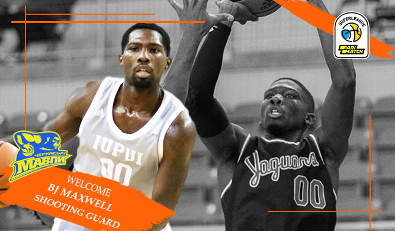

BJ Maxwell: Możliwość gry w ukraińskiej Super Lidze w pierwszym roku profesjonalnej koszykówki to błogosławieństwo
Amerykański legionista BJ Maxwell dołączył do zespołu Cherkasy Monkeys podczas przerwy noworocznej, a 10 stycznia rozegrał swój pierwszy mecz w składzie zespołu. W meczu ze Starym Łuckiem amerykański obrońca został najlepszym zawodnikiem, zdobywając 22 punkty, 9 zbiórek, 6 asyst (RE 28).
Mimo napiętego grafiku zespołu, który przygotowuje się do kolejnej rundy Superligi Parimatch, udało nam się porozmawiać z koszykarzem i poznać jego pierwsze wrażenia z ukraińskiej koszykówki.
- Powiedz mi, dlaczego zdecydowałeś się grać na Ukrainie? Czy były jakieś obawy, bo obecnie w kraju toczy się wojna.
- Zdecydowałem się na przyjazd do Czerkas, ponieważ była to wielka szansa dla mojej kariery. Dla początkującego możliwość gry w ukraińskiej Super Lidze w pierwszym roku profesjonalnej koszykówki jest szczęściem.
Przed przyjazdem miałem pewne zmartwienia i niepokoje, ale gościnność, z jaką mnie powitano, dodała mi pewności siebie i teraz czuję się jak w domu. To nie jest dla każdego, to ważna decyzja. Potencjalnie ryzykuję życie, ryzykuję spełnienie marzenia, to nie jest coś, co należy lekceważyć. Jestem w pełni świadomy powagi toczącej się wojny. Ale wolałbym umrzeć ze świadomością, że zrobiłem wszystko, co w mojej mocy, aby spełnić swoje marzenia, niż żyć z żalem, że nie starałem się wystarczająco mocno, aby je spełnić. Wszyscy mamy wybory i przychodzi czas, kiedy musimy podjąć ważne decyzje w naszym życiu. Wielokrotnie spotkałem się z taką sytuacją i ani razu nie żałowałem wyniku.
- Jaka była reakcja kolegów i przeciwników, kiedy dołączyłeś do zespołu?
- Koledzy z drużyny od razu mnie zaakceptowali. Pytali też, co skłoniło mnie do przyjazdu na Ukrainę. Od pierwszego treningu od razu wpasowałem się w nasz zespół i uwielbiam być tutaj, w drużynie Cherkasy Monkeys. Chłopaki ułatwili mi przejście.
